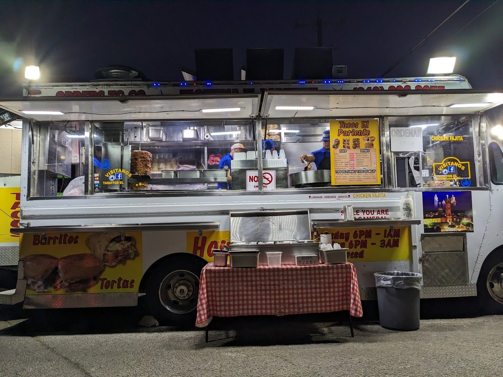

ITEM 1
Mini tacos
Al pastor mini tacos, plus asada with little to no fat.
Taco truck · Nogalitos St, San Antonio
Al pastor mini tacos, asada, lengua and tripas, served fast until the early hours.

What's on the window
What we serve at the window.
Al pastor mini tacos, plus asada with little to no fat.

Lengua, al pastor and tripas tacos, with grilled onions.

Quesabirrias, made to order at the window.
4.7 ★ · 109 Google reviews
Got three tacos. Lengua, al pastor, and tripas. All three were excellent. The lengua was probably the best I've had in San Antonio. Fantastic grilled onions. Try this place.
The food here is amazing! The quantity and quality of the food is amazing for the price. The staff are kind and fast with preparing and putting your order together. This truck provides amazing Mexican mini tacos and southside pride to your stomach! I would definitely suggest their Al pastor mini tacos!! This truck is the place to go especially for late night eats!
Theeee best tacos. little to no fat in the asada. Service so quick and the staff is so sweet. Also, they take card. will definitely be back!!
Kitchen notes
Green lights at night and a checkered table out front for the line.
Late-night mini tacos, full plates and fair prices. Kind, quick staff. We take card.

Pickup / dine in
3916 Nogalitos St, San Antonio, TX 78211
Closed Tuesdays. Friday and Saturday the window stays open until 3 AM.